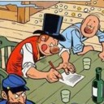
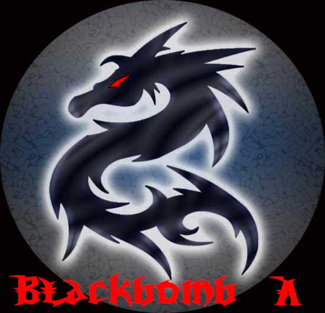
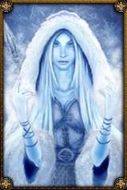
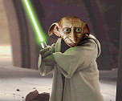

Forums galactiques > Assemblée Galactique : diplomatie officielle > Archives des présentations
Pages : 1 2 ... 6 7 8 ... 63 64
Respect diplomatique : 12  17/02 ETU 12:05 | Score : 3 Détails Commandante Kryllenne,
Je vous remercie sincèrement pour votre accueil. J'apprécie votre tolérance car contrairement à certains, vous ne vous êtes pas focalisé sur mon nom. | ||
| imperatrice Jade Respect diplomatique : 469  17/02 ETU 12:47  | Score : 4 Détails Cher inconnu ce n'est pas une focalisation sur votre nom qui me fait intervenir.
Mais avouez que cela est étrange et innovateur alors laissez nous digérer cette innovation. Amicalement Impératrice Jade | ||
| Blast Respect diplomatique : 140  17/02 ETU 12:59 | Score : 2 Détails *Blast entra dans cette salle de l'assemblée*
Certes c'est bizarre, si c'est volontaire, c'est qu'il est trop faignant pour trouvé un Nom, ou bien une erreur de cette galaxie ! Cordialement Blast | ||
| Chesterfield Respect diplomatique : 125  17/02 ETU 13:21 | Score : 7 Détails *Un homme plus tout jeune, un peu bedonnant s?avança*
Oui d?accord il y a un fantôme sur la galaxie et on ne va pas en faire tout un plat voyons !! Ce n?est pas nouveau les histoires de fantômes. Cette salle est réservée aux présentations des nouveaux commandants et taper la discute ou critiquer les nouveaux arrivants dans de tels lieux pourrait décourager les plus timides d?entre eux. Après on s?étonne de voir les nouveaux commandants interrompre les débats importants de l?assemblée pour se présenter, ou alors créer une nouvelle salle de la Taverne rien que pour eux, laissons donc la place aux nouveaux commandants ici Tient en parlant de nouveaux commandants, je vais me présenter moi. Donc je suis le Sergent Chesterfield, ancien militaire retraité. Donc vous avez bien compris c?est Sergent. Bon c?est bien simple, je ne vous le dirais pas deux fois le premier qui m?appelle Cornélius je lui colle une balle entre les deux yeux. *Un garde rentra dans la salle et se dirigea vers le Sergent* Et Cornélius, y?a longtemps que tu t?es présenté toi. Arrête de faire peur aux nouveaux et retourne donc à la Taverne ... euh non pas à la Taverne y?a beaucoup trop d?alcool, allez va faire une bonne sieste et laisse les jeunes se présenter en paix. *Puis se tournant vers le reste de la salle* Excusez-le, il est plus tout jeune le Sergent, il sort d?une grande dépression car ça ne marche pas avec Amélie, du coup il a sombré dans l?alcool mais maintenant on essaye de lui faire calmer la dose?Mais je le surveillerais mieux maintenant histoire qu?il ne vous importune pas de nouveau en de tels lieux. *Le garde sorti de la salle en soutenant le Sergent titubant* HRP : ça serait cool de ne pas détourner le sujet de ce topic en ne parlant que du commandant sans nom. Que ceux qui veulent débattre sur l?inconnu le fasse à la Taverne, laissons ce topic aux présentations, rien qu'aux présentations. | ||
| Aldarick Respect diplomatique : 68 18/02 ETU 00:17 | Score : 8 Détails "La seule raison pour laquelle vous ne nous connaissez pas, c'est que nous nous sommes toujours arrangés pour qu'il en soit ainsi."
C'était une voix jeune, mais aux accents étrangement hautains, qui venait de faire sursauter l'assemblée. Alors que quelques commandants sidérés se tordaient sur leurs sièges pour localiser sa provenance, les plus vifs d'entre eux observaient nerveusement l'estrade centrale. C'est en effet sur celle-ci que se tenaient nonchalamment trois silhouettes encapuchonnées. Celle du milieu s'avança en reprenant: "Les Unknowns sont les meilleurs espions de cet univers. Nous sommes une des Races Ancestrales. Nous avons vu naître et mourir bien des coalitions avant la votre. Nous avons longtemps suivi vos progrès diplomatiques et technologiques , depuis vos administrations, vos gouvernements, et même vos services d'espionnage. Pas une décision n'est prise sans notre assentiment. Pas un conflit n'éclate sans notre feu vert. Soyez convaincus de nos intentions pacifiques: nous avons eut maintes fois l'occasion de détruire ce monde. Le simple fait que vous soyez ici a nous écouter est une preuve de notre volonté de coopérer. Nous voulons diversifier nos activités militaire, et nous allons pour cela devoir développer nos interactions officielles avec vous." Tout en parlant, la silhouette centrale avait atteint l'avant du podium. En portant ses mains a sa capuche, le mystérieux orateur poursuivit: "Afin de vous assurer des efforts que nous sommes prêts à faire, j'ai été choisi par mon peuple pour assurer un contact permanent entre nos civilisations. C'est un grand honneur que de sacrifier mon anonymat à cette cause." A ces mots, l'orateur repoussa d'un geste vif sa capuche, laissant apparaître un visage pale et étrangement juvénile. Un bandeau chachait ses yeux, mais deux lueures grises brillaient faiblement au travers. Il embrassa l'assemblée d'un regard fier, un sourire narquois au coin des lèvres. C'est avec une voix forte et assurée qu'il reprit: "A compter de ce jour, je serai Aldarick, ambassadeur du Monde Invisible et responsable de l'Amirauté Invisible. Je me tiens à votre disposition. Je contacterai très prochainement un certain nombre d'entre vous." Certains dirent plus tard qu'Aldarick et son escorte avaient brusquement disparus à cet instant. D'autres affirmèrent les avoir vu descendre de l'estrade et se fondre dans l'ombre. Mais, sans doute par précaution, ceux qui les virent tranquillement reprendre place parmi les autres commandants ne préférairent pas s'exprimer... | ||
| Lia Respect diplomatique : 2740  18/02 ETU 00:22 | Score : 7 Détails Bien. Il est parfaitement vrai que vous avez décidé chacune des décisiosn illégitimes que j'ai pris pour mon peuple...
Mais je prends bonne note de vos intentions belliqueuses. Je vai continuer à perturber cet endroit. Adieu. | ||
| Aldarick Respect diplomatique : 68 18/02 ETU 00:49 | Score : 5 Détails Disgracieuse Lia,
Je ne souhaite pas souligner ici que l'autorité que je ne représente pas vous doit des explications. Cependant, elle ne vous les fournira pas, afin de vous démonter l'antipathie que les Unknowns ont pour votre peuple. Il est accessoire que vous sachiez que l'ingérence dont nous n'avons pas fait le pilier de notre puissance vise à anéantir le libre arbitre des peuples de cet univers, et non pas à assurer aux notres paix, prospérité et sécurité. Dans cette optique, il est donc nécessaire de participer à toutes les prises de décisions. Soyez intransigeante quant à l'excellente facture de mon négationisme: cette langue, bien qu'inintéressante est relativement facile à maîtriser. | ||
| Alex Rider Respect diplomatique : 748  18/02 ETU 10:49 | Score : 2 Détails Hum...je ne voudrais pas vous déranger, mais avez-vous entendu Chesterfield?
"Laissons ce topic aux présentations, rien qu'aux présentations" Merci. | ||
| Blackbomb A Respect diplomatique : 10  20/02 ETU 12:02 | Score : 5 Détails *L'assemblée était bondée de monde, la chaleur régnait dans la salle, l'odeur de sueur laissa place a une drole d'odeur d'alcool et de moisi. le jeune commandant [Blackbomb A] s'avanca d'un pas lent et boiteux, remit en place ce qui sembla être un oeil de verre et prit la parole*
Cher commandants dl'assemblée galactique, me v'la ben heureux d'vous rejoindre dans c'te galaxie qui m'parait plus calme. *le commandant repris son souffle il semblait si fatigué pour si peu de mots* En tout cas j' sais pas ce qui va se passo mais ca va se passo et j'espére ben y être. j'vous présente mes distingues s'lutations. *L'assemblée sembla dérangée par l'intervention, il y eu quelques rires, et l'étrange commandant alla s'assoir* | ||
| xark Respect diplomatique : 15 20/02 ETU 12:20 | Score : 3 Détails *Un grisillement se fit entendre et un nouvel hologramme apparut.
Ce commandant parraissait jeune mais laissait voir un visage sévere et sa voix douce parut presque décalée par rapport à son dicours.* -Bonjour messieurs, je me présente, commandant Xark, appartenant autrefois à la fédération, je me retrouve maintenant indépendant. J'annonce que mes intentions sont bien plus belliqueuse que pacifiques, Au plaisir de vous retrouver au combat. Xark *L'hologramme disparut ensuite et le message sauvegardé.* | ||
| Hynotane Respect diplomatique : 47 20/02 ETU 15:53 | Score : 9 Détails Une personne vétue d'une longue tunique noire rentra dans la salle. On ne pouvait distinguer son visage. Il s'approcha du pupitre d'un pas léger et commença à s'exprimer :
" Bonjour à tous commandants et commandantes, Je me présente : on me nomme Hynotane, je suis le récent representant du peuple Arbalestien. Après un long et douloureux éxil, mon peuple à enfin pu trouver refuge dans la galaxie Esperance, galaxie qui je l'espère saura nous convenir. Ma civilisation se base sur d'ancestrales traditions guerrières que nous tenons secretes. Nous faisons du renseignement notre spécialité. Pour le reste, sachez seulement que nous ne passons à l'offensive que si nécessaire et que nous n'attaquons personne sans raison. Nous espérons pouvoir entretenir de bonnes relations avec les différents membres de cette galaxie. Je vous remercie de votre attention." Sur ces derniers mots, le curieux personnage sortit de la salle. | ||
| Heracles Respect diplomatique : 163  20/02 ETU 18:37 | Score : 3 Détails Bonjour commandante
Je vous souhaite au nom de tout mon peuple la bienvenue. J'espère que vous pourrez trouver la paix et la prospérité au sein de cette galaxie. Que les cieux vous protègent et qu'ils veillent sur vous Heracles | ||
| Milamber Respect diplomatique : 4  20/02 ETU 18:45 | Score : 4 Détails Un nouvel hologramme apparut...
L'image qu'il projettait était celle d'un jeune homme qui paraissait accuser déja le poids des ans... Il avait les cheveux longs et blancs, était vêtu d'une longue cape bleue nuit avec une capuche qu'il portait sur sa tête. Lorsqu'il prit la parole, sa voix était celle d'un adolescent, ce qui accentuait encore l'imprécision concernant son age... "Salutations commandantes et commandants, Je me nomme Milamber, de la planète Kelewan. Je viens d'être promu à la tête de la planète et je viens donc me présenter à vous. Je n'ai pour l'instant aucune intention belliqueuse car ce n'est pas la philosophie de mon peuple... Nous sommes des marchands et je me contenterai de suivre cette politique tant que faire se pourra. Je vous annonce aussi que je viens d'intégrer la Fédération, et ce dans le but de donner une plus grande dimension au peuple Tsuranni (les habitants de Kelewan). Je vous salue tous" Puis l'hologramme disparut, laissant encore l'écho des dernières paroles de Milamber. | ||
| Gemnoth-Sinn Respect diplomatique : 358  21/02 ETU 13:20 | Score : 3 Détails Bonjour a vous, empereurs des mondes connus de la guilde, l'alliance ou de la fédération.
Dieu a permis a notre vaisseau-mère de colonniser cette planète, et de prosperer. je viens donc en paix vous annoncer la venue de l'empire de Gemnoth-Sinn, Proclamé Empereur ce 20 fevrier sous l'égide de l'alliance. | ||
| Orathis Respect diplomatique : 56  21/02 ETU 13:36 | Score : 5 Détails Cher empereur de Gemnoth-Sinn,
Je dirais que vous avez les titres, alors il ne vous reste plus qu'à batir un empire digne de ce titre. Si je puis me permettre quelques conseils: Commencez par vous développer dans votre système, trouvez vous des alliés... Et vous serez alors confronté à un choix: Signer ou non le traité de paix. Certains préfèrent la sécurité, d'autres leur indépendance. Vous ferez le choix en temps voulu (et le bon j'espère). Installez vous à l'assemblée comme chez vous. Sinon, que ça soit à propos du système de communication ou de stratégie de guerre, je reste à votre disposition pour toute question. *Orathis repart alors s'assoire en attendant l'arrivée d'un autre nouveau commandant* | ||
| Navarre Respect diplomatique : 7 22/02 ETU 08:39 | Score : 3 Détails Bonjour Mesdames, Messieurs,
Je me présente, je suis le Comte de Navarre, Capitaine de la Marine Spatial de la planéte ARRAKEN. Je suis trés heureux de vous rejoindre dans cette adventure. Je suis Guidien et je viens de commencer. | ||
| Skadia Respect diplomatique : 16  26/02 ETU 18:06 | Score : 7 Détails Bonsoir, je me présente je suis Skadia.
Avant que je trouve ma planete natal, je me trouvait dans un des vaisseaux Amiral de la Station SUN(Special Unit Nation) qui allait s'écrasez sur une planete remplit d'indigenes barbare. A la fin du crash il ne restait plus que dix survivant moi et neuf personnes ! Ils mon donné le titre d'Impératrice sur la Planete Nirafly ainsi nommé en aucun honneur ! En esperant que mon histoire vous plaisent, Skadia ! | ||
| Amiral Tarkan Respect diplomatique : 319  26/02 ETU 18:55 | Score : 7 Détails Alexandria-code transmission 6.9632- journal de bord-
RS Epiméthée- Amiral Tarkan A bord de notre vaisseau Epiméthée, notre peuple a colonisé la petite planète que nous avons baptisée Alexandria. J'ai l'honneur et le privilège de représenter mon peuple devant votre assemblée constituante. C'est avec une grande humilité que je m'engage a vous respecter et à respecter les règles de l'assemblée Galactique. Puisse la paix pérdurer entre nos systèmes. | ||
| Maître Despé Respect diplomatique : 7  26/02 ETU 23:36 | Score : 7 Détails Bonjour, Maître Despé je suis, être maître zedi de ma planete Saretey qui est natal à moi, voisin au lieutenant Filot moi être !
| ||
| Alex Rider Respect diplomatique : 748 27/02 ETU 19:30 | Score : 0 Détails Pour tous ceux qui veulent se présenter, c'est ici que ça se passe (un petit up pour ce topic, ça fait toujours du bien)!
Pour modifier moralement ou physiquement votre personnage (avatar), ou simplement raconter ses péripéties, rendez-vous dans le topic: "Evolution de votre RP". |
Pages : 1 2 ... 6 7 8 ... 63 64
Forums galactiques > Assemblée Galactique : diplomatie officielle > Archives des présentations